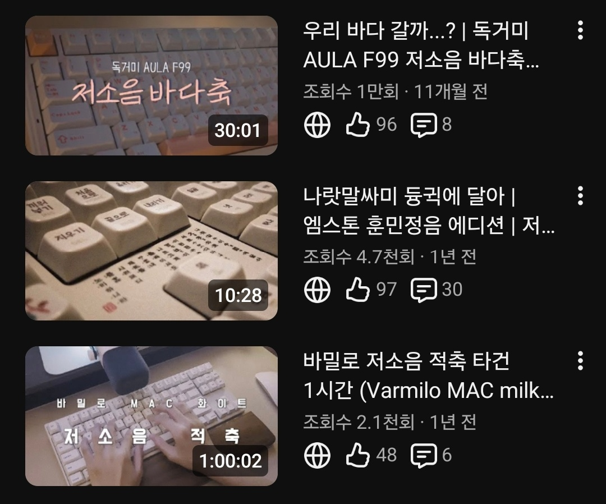
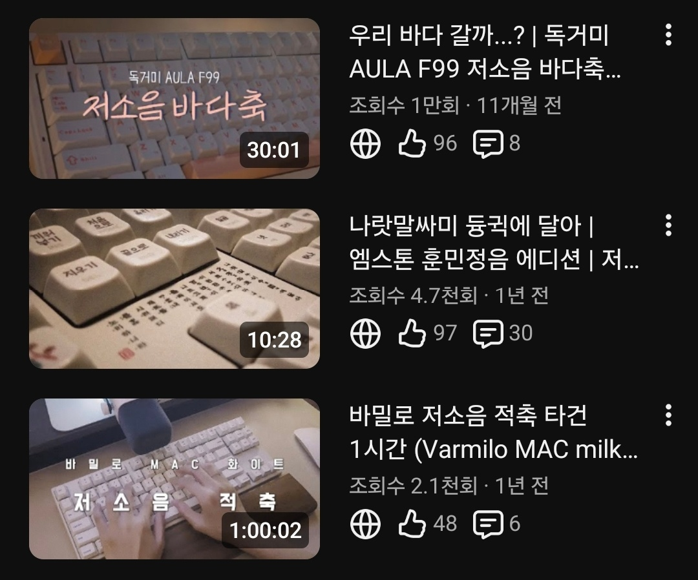
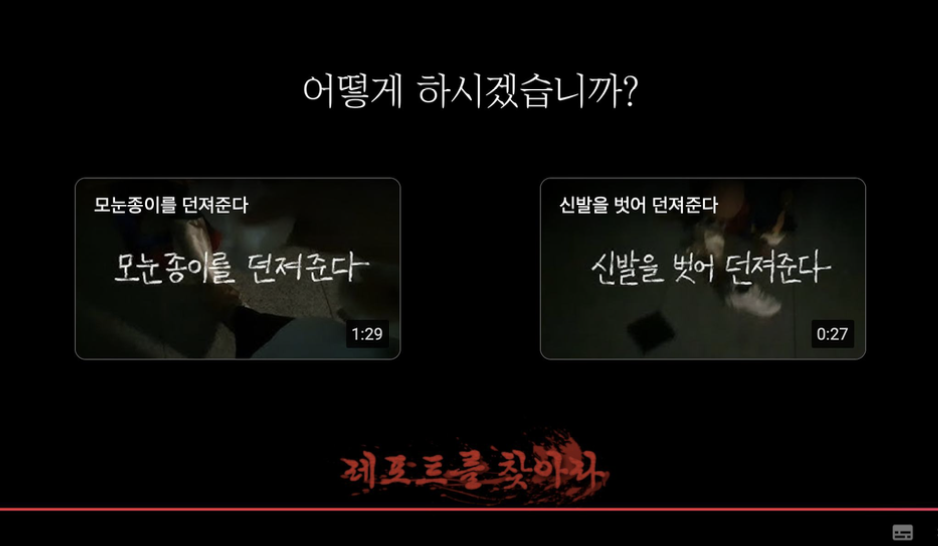
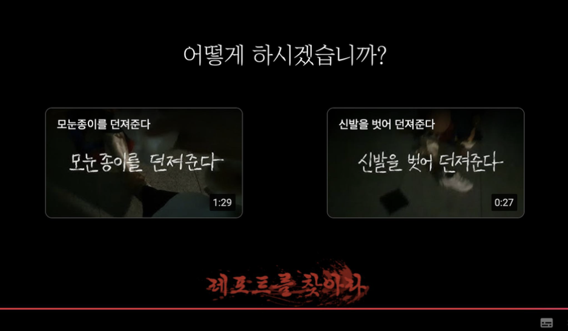

김산하
SANHA KIM
2001.08.09 (만 24세)
숙명여자대학교 홍보광고학과 | 영상 예술경영 복수전공
Email: twinab0809@naver.com
Phone: 010-3371-2981

2001.08.09 (만 24세)
숙명여자대학교 홍보광고학과 | 영상 예술경영 복수전공
Email: twinab0809@naver.com
Phone: 010-3371-2981
"새로운 방식으로 질문하고, 다양한 경험에서 인사이트를 발견하며, 결과로 말하는 사람"
콘텐츠 세계는 저에게 늘 새로운 도전이었습니다. 기자 활동 당시에는 정보 속 후킹 요소를 발굴했고, 각종 광고/마케팅 공모전에서는 익숙한 트렌드 위에 새로운 감각을 더해왔습니다. 익숙함을 깨는 시도 속에서 AI 콘텐츠의 의미 있는 성과를 만들어 왔으며, 그 과정에서 '도전은 나를 성장시킨다'는 확신을 갖게 되었습니다.
몰입하는 제 성향은 언제나 다음 성장을 향합니다. 네이버 메인 랭킹 1위, PV 2,572,876 유입, 유튜브 제품 협찬 영상 제작, 네이버 시리즈 웹소설 출간 경험으로 증명해 왔습니다. 저를 움직이는 에너지는 콘텐츠가 사람에게 선한 영향을 줄 수 있다는 믿음입니다.
2025.11
2025.02
2022.05
2022.07

웹소설 무료 연재를 시작했지만 독자 유입과 조회수가 매우 낮았고, 작품의 사업성에 대한 고민이 생겼습니다.
유입 시간, 경쟁작 패턴, 장르 선호도, 표지/소개글 후킹 요소를 분석해 플랫폼 변경·카피 리뉴얼·업로드 시간 조정을 진행했습니다.
회당 50명 이상 신규 유입 → 최종 65만 조회 → 네이버 시리즈 출간 성공. 실패 직전의 상황에서도 직접 데이터 분석과 실행을 통해 성과를 만든 경험입니다.
CJ 프레시웨이 & KUDAF 프로젝트
브랜드의 약점을 스토리로 설계하다

호떡과 맥주 조합은 신선하지만 낮은 인지도와 진입장벽을 갖고 있었음.
'호맥정음'이라는 페이크 다큐 서사 제작. 생성형 AI 활용. 낯선 조합에 익숙함 부여.
생성형 AI 첫 활용 프로젝트에서도 1위 달성. 브랜드 약점을 서사 전략으로 전환.
숏폼을 통해 현실에서 검증받는 콘텐츠

효창공원의 역사적 의미가 일상 속에서 잊힘. 기념일 외 관심 유도 어려움.
AI 기반 독립운동가 스토리텔링 숏폼 제작. 설명 중심이 아닌 감정 기반 메시지 구성.
후킹·스토리텔링의 중요성 확인. AI를 새로운 크리에이티브 도구로 확장.
'덕질'을 영상 콘텐츠로 녹여내다
 

마이너 카테고리인 '키보드' 취미는 트래픽이 적고 경쟁 크리에이터가 많았습니다.
트래픽 보유 브랜드의 제품을 모두 비교하는 리뷰 전략 실행, 브랜드 채널 링크 유입 확보.
브랜드 협찬·제작비 지원까지 경험하며, 기획–촬영–편집–커뮤니케이션 전 과정 역량 강화.
'썰' · '사랑' · 'AI'의 조합

커뮤니티 기반 스토리를 재구성하고 AI로 구현한 숏폼 제작. 캐러셀·스토리텔링 중심 기획.
브랜딩–제작–유통–분석의 전 과정을 경험하며 IP·콘텐츠 기획 역량 강화.
보는 콘텐츠를 '참여형 콘텐츠'로
 

한국 신화 속 요괴는 대중적 인식이 낮아 흥미 유도 어려움.
YouTube 추천영상 구조를 활용한 선택형 게임 연출. 1인칭 촬영·사운드로 공포감 강화.
21개 영상 제작·1,300회 조회수·60개 댓글. 참여형 콘텐츠 설계 역량 확보.
제품의 핵심 기능을 스토리로 풀다

AI 캐릭터 숏폼 포화 상태 → 타깃(여성층)의 피로도 증가.
실사 동물 다큐 무드 차용 → AI의 이질감 최소화 + 공감 기반 스토리.
네이버 랭킹 1위 달성 및 PV 극대화 실무